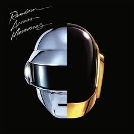
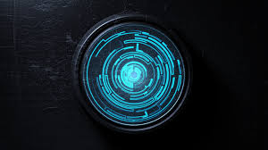
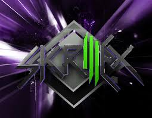

Return to main page
Top Albums in Electronic Music
-

Random Access Memories by Daft Punk - Featuring tracks like "Get Lucky," this album redefined modern electronic music.
-

Immersion by Pendulum - A perfect blend of drum and bass with electronic melodies.
-
18 by Moby - A classic album filled with soulful electronic tracks.
-

Scary Monsters and Nice Sprites by Skrillex - A groundbreaking dubstep album that defined a generation.
-
In Colour by Jamie xx - A beautifully produced album that pushes electronic music's boundaries.